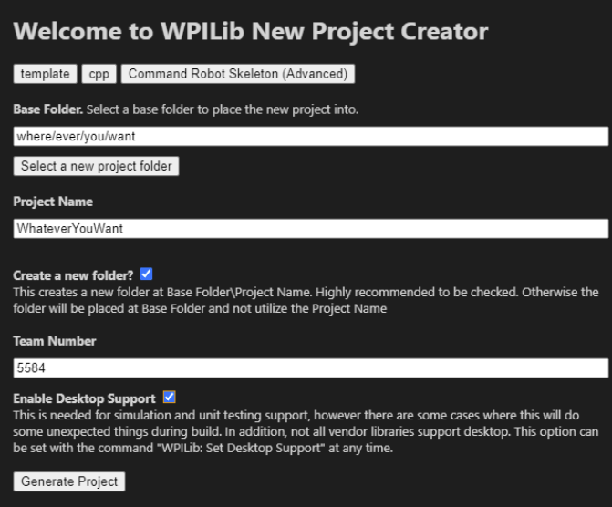

Creating your first project
You'll have an empty robot project, created from the Command Robot Skeleton template, open in WPILib VS Code.
Open the WPILib copy of VS Code you installed in the last lesson (it may say something like "2025" in the title). We'll use it to generate a fresh project to build on for the rest of the course.
Make a new project
Follow the official "Creating a Robot Program" steps, up to and including the C++ Configurations step: Creating a robot program
When the new-project form appears, fill it in like this (the Base Folder and Project Name can be whatever you want):
- Project Type: template
- Language: cpp
- Template: Command Robot Skeleton (Advanced)
- Base Folder & Project Name: your choice
- Team Number: 5584
- Enable Desktop Support: Yes

The official instructions suggest the Getting Started Example. We use the Command Robot Skeleton (Advanced) template instead. It gives us a clean, empty structure built around commands and subsystems.
Once your project is created and opened, you may see the a task begin to execute in the bottom terminal to build your project. This is normal and may take a couple of minutes, you should see a message that says BUILD SUCCESSFUL when it finishes.